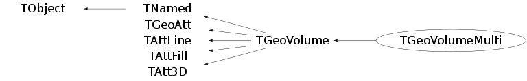

class TGeoVolumeMulti: public TGeoVolume
TGeoVolume - the base class representing solids. Volumes are the basic objects used in building the geometrical hierarchy. They represent unpositioned objects but store all information about the placement of the other volumes they may contain. Therefore a volume can be replicated several times in the geometry. In order to create a volume, one has to put togeather a shape and a medium which are already defined. Volumes have to be named by users at creation time. Every different name may represent a an unique volume object, but may also represent more general a family (class) of volume objects having the same shape type and medium, but possibly different shape parameters. It is the user's task to provide different names for different volume families in order to avoid ambiguities at tracking time. A generic family rather than a single volume is created only in two cases : when a generic shape is provided to the volume constructor or when a division operation is applied. Each volume in the geometry stores an unique ID corresponding to its family. In order to ease-up their creation, the manager class is providing an API that allows making a shape and a volume in a single step. Volumes are objects that can be visualized, therefore having visibility, colour, line and fill attributes that can be defined or modified any time after the volume creation. It is advisable however to define these properties just after the first creation of a volume namespace, since in case of volume families any new member created by the modeler inherits these properties. In order to provide navigation features, volumes have to be able to find the proper container of any point defined in the local reference frame. This can be the volume itself, one of its positioned daughter volumes or none if the point is actually outside. On the other hand, volumes have to provide also other navigation methods such as finding the distances to its shape boundaries or which daughter will be crossed first. The implementation of these features is done at shape level, but the local mother-daughters management is handled by volumes that builds additional optimisation structures upon geometry closure. In order to have navigation features properly working one has to follow the general rules for building a valid geometry (see TGeoManager class). Now let's make a simple volume representing a copper wire. We suppose that a medium is already created (see TGeoMedium class on how to create media). We will create a TUBE shape for our wire, having Rmin=0cm, Rmax=0.01cm and a half-length dZ=1cm : TGeoTube *tube = new TGeoTube("wire_tube", 0, 0.01, 1); One may ommit the name for the shape if no retreiving by name is further needed during geometry building. The same shape can be shared by different volumes having different names and materials. Now let's make the volume for our wire. The prototype for volumes constructor looks like : TGeoVolume::TGeoVolume(const char *name, TGeoShape *shape, TGeoMedium *med) Since TGeoTube derives brom the base shape class, we can provide it to the volume constructor : TGeoVolume *wire_co = new TGeoVolume("WIRE_CO", tube, ptrCOPPER); Do not bother to delete neither the media, shapes or volumes that you have created since all will be automatically cleaned on exit by the manager class. If we would have taken a look inside TGeoManager::MakeTube() method, we would have been able to create our wire with a single line : TGeoVolume *wire_co = gGeoManager->MakeTube("WIRE_CO", ptrCOPPER, 0, 0.01, 1); The same applies for all primitive shapes, for which there can be found corresponding MakeSHAPE() methods. Their usage is much more convenient unless a shape has to be shared between more volumes. Let's make now an aluminium wire having the same shape, supposing that we have created the copper wire with the line above : TGeoVolume *wire_al = new TGeoVolume("WIRE_AL", wire_co->GetShape(), ptrAL); Now that we have learned how to create elementary volumes, let's see how we can create a geometrical hierarchy. Positioning volumes When creating a volume one does not specify if this will contain or not other volumes. Adding daughters to a volume implies creating those and adding them one by one to the list of daughters. Since the volume has to know the position of all its daughters, we will have to supply at the same time a geometrical transformation with respect to its local reference frame for each of them. The objects referencing a volume and a transformation are called NODES and their creation is fully handled by the modeler. They represent the link elements in the hierarchy of volumes. Nodes are unique and distinct geometrical objects ONLY from their container point of view. Since volumes can be replicated in the geometry, the same node may be found on different branches./*
 */
*/
An important observation is that volume objects are owned by the TGeoManager class. This stores a list of all volumes in the geometry, that is cleaned upon destruction. Let's consider positioning now our wire in the middle of a gas chamber. We need first to define the gas chamber : TGeoVolume *chamber = gGeoManager->MakeTube("CHAMBER", ptrGAS, 0, 1, 1); Now we can put the wire inside : chamber->AddNode(wire_co, 1); If we inspect now the chamber volume in a browser, we will notice that it has one daughter. Of course the gas has some container also, but let's keep it like that for the sake of simplicity. The full prototype of AddNode() is : TGeoVolume::AddNode(TGeoVolume *daughter, Int_t usernumber, TGeoMatrix *matrix=gGeoIdentity) Since we did not supplied the third argument, the wire will be positioned with an identity transformation inside the chamber. One will notice that the inner radii of the wire and chamber are both zero - therefore, aren't the two volumes overlapping ? The answer is no, the modeler is even relaying on the fact that any daughter is fully contained by its mother. On the other hand, neither of the nodes positioned inside a volume should overlap with each other. We will see that there are allowed some exceptions to those rules. Overlapping volumes Positioning volumes that does not overlap their neighbours nor extrude their container is sometimes quite strong contrain. Some parts of the geometry might overlap naturally, e.g. two crossing tubes. The modeller supports such cases only if the overlapping nodes are declared by the user. In order to do that, one should use TGeoVolume::AddNodeOverlap() instead of TGeoVolume::AddNode(). When 2 or more positioned volumes are overlapping, not all of them have to be declared so, but at least one. A point inside an overlapping region equally belongs to all overlapping nodes, but the way these are defined can enforce the modeler to give priorities. The general rule is that the deepest node in the hierarchy containing a point have the highest priority. For the same geometry level, non-overlapping is prioritized over overlapping. In order to illustrate this, we will consider few examples. We will designate non-overlapping nodes as ONLY and the others MANY as in GEANT3, where this concept was introduced: 1. The part of a MANY node B extruding its container A will never be "seen" during navigation, as if B was in fact the result of the intersection of A and B. 2. If we have two nodes A (ONLY) and B (MANY) inside the same container, all points in the overlapping region of A and B will be designated as belonging to A. 3. If A an B in the above case were both MANY, points in the overlapping part will be designated to the one defined first. Both nodes must have the same medium. 4. The silces of a divided MANY will be as well MANY. One needs to know that navigation inside geometry parts MANY nodes is much slower. Any overlapping part can be defined based on composite shapes - this is always recommended.
Function Members (Methods)
public:
protected:
| TGeoVolumeMulti(const TGeoVolumeMulti&) | |
| virtual void | TObject::DoError(int level, const char* location, const char* fmt, va_list va) const |
| void | TObject::MakeZombie() |
| TGeoVolumeMulti& | operator=(const TGeoVolumeMulti&) |
Data Members
public:
| enum TGeoVolume::EGeoVolumeTypes { | kVolumeReplicated | |
| kVolumeSelected | ||
| kVolumeDiv | ||
| kVolumeOverlap | ||
| kVolumeImportNodes | ||
| kVolumeMulti | ||
| kVoxelsXYZ | ||
| kVoxelsCyl | ||
| kVolumeClone | ||
| kVolumeAdded | ||
| }; | ||
| enum TObject::EStatusBits { | kCanDelete | |
| kMustCleanup | ||
| kObjInCanvas | ||
| kIsReferenced | ||
| kHasUUID | ||
| kCannotPick | ||
| kNoContextMenu | ||
| kInvalidObject | ||
| }; | ||
| enum TObject::[unnamed] { | kIsOnHeap | |
| kNotDeleted | ||
| kZombie | ||
| kBitMask | ||
| kSingleKey | ||
| kOverwrite | ||
| kWriteDelete | ||
| }; | ||
| enum TGeoAtt::[unnamed] { | kBitMask | |
| }; | ||
| enum TGeoAtt::EGeoVisibilityAtt { | kVisOverride | |
| kVisNone | ||
| kVisThis | ||
| kVisDaughters | ||
| kVisOneLevel | ||
| kVisStreamed | ||
| kVisTouched | ||
| kVisOnScreen | ||
| kVisContainers | ||
| kVisOnly | ||
| kVisBranch | ||
| kVisRaytrace | ||
| }; | ||
| enum TGeoAtt::EGeoActivityAtt { | kActOverride | |
| kActNone | ||
| kActThis | ||
| kActDaughters | ||
| }; | ||
| enum TGeoAtt::EGeoOptimizationAtt { | kUseBoundingBox | |
| kUseVoxels | ||
| kUseGsord | ||
| }; | ||
| enum TGeoAtt::EGeoSavePrimitiveAtt { | kSavePrimitiveAtt | |
| kSaveNodesAtt | ||
| }; |
protected:
| TObject* | TGeoVolume::fField | ! just a hook for now |
| Color_t | TAttFill::fFillColor | fill area color |
| Style_t | TAttFill::fFillStyle | fill area style |
| TGeoPatternFinder* | TGeoVolume::fFinder | finder object for divisions |
| UInt_t | TGeoAtt::fGeoAtt | option flags |
| TGeoManager* | TGeoVolume::fGeoManager | ! pointer to TGeoManager owning this volume |
| Color_t | TAttLine::fLineColor | line color |
| Style_t | TAttLine::fLineStyle | line style |
| Width_t | TAttLine::fLineWidth | line width |
| TGeoMedium* | TGeoVolume::fMedium | tracking medium |
| TString | TNamed::fName | object identifier |
| TObjArray* | TGeoVolume::fNodes | array of nodes inside this volume |
| Int_t | TGeoVolume::fNtotal | total number of physical nodes |
| Int_t | TGeoVolume::fNumber | volume serial number in the list of volumes |
| TString | TGeoVolume::fOption | ! option - if any |
| TGeoShape* | TGeoVolume::fShape | shape |
| TString | TNamed::fTitle | object title |
| TGeoVoxelFinder* | TGeoVolume::fVoxels | finder object for bounding boxes |
Class Charts
{kind=link}
{kind=link}
{kind=link}
{kind=link}

Function documentation
void AddVolume(TGeoVolume* vol)
Add a volume with valid shape to the list of volumes. Copy all existing nodes to this volume
void AddNode(const TGeoVolume* vol, Int_t copy_no, TGeoMatrix* mat, Option_t* option = "")
Add a new node to the list of nodes. This is the usual method for adding daughters inside the container volume.
void AddNodeOverlap(const TGeoVolume* vol, Int_t copy_no, TGeoMatrix* mat, Option_t* option = "")
Add a new node to the list of nodes, This node is possibly overlapping with other daughters of the volume or extruding the volume.
TGeoVolume * Divide(const char* divname, Int_t iaxis, Int_t ndiv, Double_t start, Double_t step, Int_t numed = 0, Option_t* option = "")
division of multiple volumes
TGeoVolume * MakeCopyVolume(TGeoShape* newshape)
Make a copy of this volume build a volume with same name, shape and medium